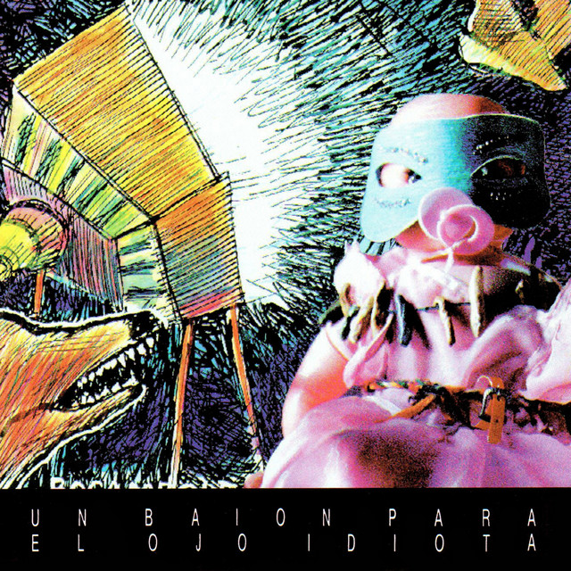
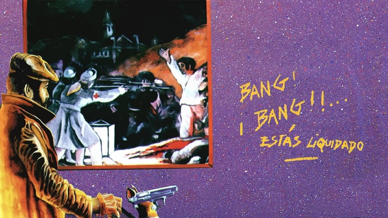
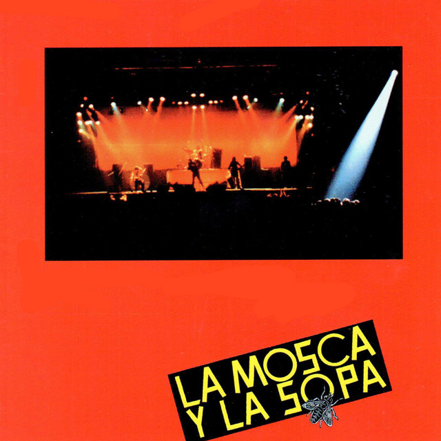

¿Quienes fueron Patricio Rey y sus Redonditos de Ricota?
Patricio Rey y sus Redonditos de Ricota, también conocidos como Los Redondos, fue un grupo musical de rock argentino formado en La Plata en el año 1976 e integrado, en su mayor parte, por el Indio Solari (voz y composición), Skay Beilinson (guitarra y composición), Semilla Bucciarelli (bajo), Walter Sidotti (batería) y Sergio Dawi (saxofón, armónica y piano). Es considerado uno de las grupos más importantes e influyentes de la historia de la música de Argentina, así como también uno de los más convocantes en términos de audiencia.
Un baión para el ojo idiota(1988)

el tercer álbum Un baión para el ojo idiota presenta un sonido mucho más sólido, saliendo de los tonos menores y acordes atípicos, y comenzando a utilizar guitarras eléctricas distorsionadas y ritmos de batería en donde se siente un sonido de rock and roll más clásico, en algunos casos recuperando el sonido festivo de Gulp!.
Ver mas
¡Bang! ¡Bang! Estás liquidado(1989)

La salida de ¡Bang! ¡Bang! Estás liquidado, el cuarto disco de Patricio Rey y sus Redonditos de Ricota editado hace 30 años, los primeros días de octubre de 1989, determinó el final de la etapa under que la banda había iniciado a comienzos de esa década
Ver mas
La Mosca y La Sopa

El quinto disco del grupo comandado por el Indio Solari y Skay Beilinson incluye hits para todos los gustos. Le permitió al quinteto acceder a públicos hasta hacía poco inaccesibles
Ver mas